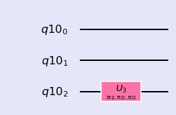

Three qubit Circuit
Three Qubit Circuits
%matplotlib inline
import numpy as np
import IPython
import matplotlib.pyplot as plt
from qiskit import QuantumCircuit
from qiskit import BasicAer
from qiskit.tools.jupyter import *
from qiskit.visualization import *
import seaborn as sns
sns.set()
from helper import *
import os
import glob
import moviepy.editor as mpy
from numpy import pi
Three qubit circuit
Base states: |000>,|001>,|010>,|011>,|100>,|110>,|101>,|111>
Gate on First Qubit
\( I \otimes I \otimes U \)
q = QuantumRegister(3)
qc = QuantumCircuit(q)
qc.u3(pi/2,pi/2,pi/2,q[0])
style = {'backgroundcolor': 'lavender'}
qc.draw(output='mpl', style = style)

getMatrix(qc)
matrix([[ 0.707+0.j , -0. -0.707j, 0. +0.j , 0. +0.j ,
0. +0.j , 0. +0.j , 0. +0.j , 0. +0.j ],
[ 0. +0.707j, -0.707+0.j , 0. +0.j , 0. +0.j ,
0. +0.j , 0. +0.j , 0. +0.j , 0. +0.j ],
[ 0. +0.j , 0. +0.j , 0.707+0.j , -0. -0.707j,
0. +0.j , 0. +0.j , 0. +0.j , 0. +0.j ],
[ 0. +0.j , 0. +0.j , 0. +0.707j, -0.707+0.j ,
0. +0.j , 0. +0.j , 0. +0.j , 0. +0.j ],
[ 0. +0.j , 0. +0.j , 0. +0.j , 0. +0.j ,
0.707+0.j , -0. -0.707j, 0. +0.j , 0. +0.j ],
[ 0. +0.j , 0. +0.j , 0. +0.j , 0. +0.j ,
0. +0.707j, -0.707+0.j , 0. +0.j , 0. +0.j ],
[ 0. +0.j , 0. +0.j , 0. +0.j , 0. +0.j ,
0. +0.j , 0. +0.j , 0.707+0.j , -0. -0.707j],
[ 0. +0.j , 0. +0.j , 0. +0.j , 0. +0.j ,
0. +0.j , 0. +0.j , 0. +0.707j, -0.707+0.j ]])
Gate on Second Qubit
\( I \otimes U \otimes I \)
q = QuantumRegister(3)
qc = QuantumCircuit(q)
qc.u3(pi/2,pi/2,pi/2,q[1])
style = {'backgroundcolor': 'lavender'}
qc.draw(output='mpl', style = style)

getMatrix(qc)
matrix([[ 0.707+0.j , 0. +0.j , -0. -0.707j, 0. +0.j ,
0. +0.j , 0. +0.j , 0. +0.j , 0. +0.j ],
[ 0. +0.j , 0.707+0.j , 0. +0.j , -0. -0.707j,
0. +0.j , 0. +0.j , 0. +0.j , 0. +0.j ],
[ 0. +0.707j, 0. +0.j , -0.707+0.j , 0. +0.j ,
0. +0.j , 0. +0.j , 0. +0.j , 0. +0.j ],
[ 0. +0.j , 0. +0.707j, 0. +0.j , -0.707+0.j ,
0. +0.j , 0. +0.j , 0. +0.j , 0. +0.j ],
[ 0. +0.j , 0. +0.j , 0. +0.j , 0. +0.j ,
0.707+0.j , 0. +0.j , -0. -0.707j, 0. +0.j ],
[ 0. +0.j , 0. +0.j , 0. +0.j , 0. +0.j ,
0. +0.j , 0.707+0.j , 0. +0.j , -0. -0.707j],
[ 0. +0.j , 0. +0.j , 0. +0.j , 0. +0.j ,
0. +0.707j, 0. +0.j , -0.707+0.j , 0. +0.j ],
[ 0. +0.j , 0. +0.j , 0. +0.j , 0. +0.j ,
0. +0.j , 0. +0.707j, 0. +0.j , -0.707+0.j ]])
Gate on Third Qubit
$$U \otimes I \otimes I$$
q = QuantumRegister(3)
qc = QuantumCircuit(q)
qc.u3(pi/2,pi/2,pi/2,q[2])
style = {'backgroundcolor': 'lavender'}
qc.draw(output='mpl', style = style)

getMatrix(qc)
matrix([[ 0.707+0.j , 0. +0.j , 0. +0.j , 0. +0.j ,
-0. -0.707j, 0. +0.j , 0. +0.j , 0. +0.j ],
[ 0. +0.j , 0.707+0.j , 0. +0.j , 0. +0.j ,
0. +0.j , -0. -0.707j, 0. +0.j , 0. +0.j ],
[ 0. +0.j , 0. +0.j , 0.707+0.j , 0. +0.j ,
0. +0.j , 0. +0.j , -0. -0.707j, 0. +0.j ],
[ 0. +0.j , 0. +0.j , 0. +0.j , 0.707+0.j ,
0. +0.j , 0. +0.j , 0. +0.j , -0. -0.707j],
[ 0. +0.707j, 0. +0.j , 0. +0.j , 0. +0.j ,
-0.707+0.j , 0. +0.j , 0. +0.j , 0. +0.j ],
[ 0. +0.j , 0. +0.707j, 0. +0.j , 0. +0.j ,
0. +0.j , -0.707+0.j , 0. +0.j , 0. +0.j ],
[ 0. +0.j , 0. +0.j , 0. +0.707j, 0. +0.j ,
0. +0.j , 0. +0.j , -0.707+0.j , 0. +0.j ],
[ 0. +0.j , 0. +0.j , 0. +0.j , 0. +0.707j,
0. +0.j , 0. +0.j , 0. +0.j , -0.707+0.j ]])
Gates on first two qubits
$$I \otimes U \otimes U$$
q = QuantumRegister(3)
qc = QuantumCircuit(q)
qc.u3(pi/2,pi/2,pi/2,q[0])
qc.u3(pi/2,pi/2,pi/2,q[1])
style = {'backgroundcolor': 'lavender'}
qc.draw(output='mpl', style = style)

getMatrix(qc)
matrix([[ 0.5+0.j , -0. -0.5j, -0. -0.5j, -0.5+0.j , 0. +0.j ,
0. +0.j , 0. +0.j , 0. +0.j ],
[ 0. +0.5j, -0.5+0.j , 0.5-0.j , 0. +0.5j, 0. +0.j ,
0. +0.j , 0. +0.j , 0. +0.j ],
[ 0. +0.5j, 0.5-0.j , -0.5+0.j , 0. +0.5j, 0. +0.j ,
0. +0.j , 0. +0.j , 0. +0.j ],
[-0.5+0.j , -0. -0.5j, -0. -0.5j, 0.5-0.j , 0. +0.j ,
0. +0.j , 0. +0.j , 0. +0.j ],
[ 0. +0.j , 0. +0.j , 0. +0.j , 0. +0.j , 0.5+0.j ,
-0. -0.5j, -0. -0.5j, -0.5+0.j ],
[ 0. +0.j , 0. +0.j , 0. +0.j , 0. +0.j , 0. +0.5j,
-0.5+0.j , 0.5-0.j , 0. +0.5j],
[ 0. +0.j , 0. +0.j , 0. +0.j , 0. +0.j , 0. +0.5j,
0.5-0.j , -0.5+0.j , 0. +0.5j],
[ 0. +0.j , 0. +0.j , 0. +0.j , 0. +0.j , -0.5+0.j ,
-0. -0.5j, -0. -0.5j, 0.5-0.j ]])
Gate on all 3 qubits
$$U \otimes U \otimes U$$
q = QuantumRegister(3)
qc = QuantumCircuit(q)
qc.u3(pi/2,pi/2,pi/2,q[0])
qc.u3(pi/2,pi/2,pi/2,q[1])
qc.u3(pi/2,pi/2,pi/2,q[2])
style = {'backgroundcolor': 'lavender'}
qc.draw(output='mpl', style = style)

getMatrix(qc)
matrix([[ 0.354+0.j , -0. -0.354j, -0. -0.354j, -0.354+0.j ,
-0. -0.354j, -0.354+0.j , -0.354+0.j , 0. +0.354j],
[ 0. +0.354j, -0.354+0.j , 0.354-0.j , 0. +0.354j,
0.354-0.j , 0. +0.354j, -0. -0.354j, 0.354-0.j ],
[ 0. +0.354j, 0.354-0.j , -0.354+0.j , 0. +0.354j,
0.354-0.j , -0. -0.354j, 0. +0.354j, 0.354-0.j ],
[-0.354+0.j , -0. -0.354j, -0. -0.354j, 0.354-0.j ,
0. +0.354j, -0.354+0.j , -0.354+0.j , -0. -0.354j],
[ 0. +0.354j, 0.354-0.j , 0.354-0.j , -0. -0.354j,
-0.354+0.j , 0. +0.354j, 0. +0.354j, 0.354-0.j ],
[-0.354+0.j , -0. -0.354j, 0. +0.354j, -0.354+0.j ,
-0. -0.354j, 0.354-0.j , -0.354+0.j , -0. -0.354j],
[-0.354+0.j , 0. +0.354j, -0. -0.354j, -0.354+0.j ,
-0. -0.354j, -0.354+0.j , 0.354-0.j , -0. -0.354j],
[-0. -0.354j, 0.354-0.j , 0.354-0.j , 0. +0.354j,
0.354-0.j , 0. +0.354j, 0. +0.354j, -0.354+0.j ]])
Gate on all qubits
$$(U \times U) \otimes (U \times U) \otimes (U \times U)$$
q = QuantumRegister(3)
qc = QuantumCircuit(q)
qc.u3(pi/2,pi/2,pi/2,q[0])
qc.u3(pi/2,pi/2,pi/2,q[0])
qc.u3(pi/4,pi/4,pi/4,q[1])
qc.u3(3*pi/4,3*pi/4,3*pi/4,q[1])
qc.u3(pi/6,pi/6,pi/6,q[2])
qc.u3(5*pi/6,5*pi/6,5*pi/6,q[2])
style = {'backgroundcolor': 'lavender'}
qc.draw(output='mpl', style = style)

getMatrix(qc)
matrix([[ 0.354+0.j , 0. +0.j , 0.25 +0.25j , 0. +0.j ,
0.53 +0.306j, 0. +0.j , 0.158+0.592j, 0. +0.j ],
[ 0. +0.j , 0.354+0.j , 0. +0.j , 0.25 +0.25j ,
0. +0.j , 0.53 +0.306j, 0. +0.j , 0.158+0.592j],
[-0.25 +0.25j , 0. +0.j , 0.354-0.j , 0. +0.j ,
-0.592+0.158j, 0. +0.j , 0.53 +0.306j, 0. +0.j ],
[ 0. +0.j , -0.25 +0.25j , 0. +0.j , 0.354-0.j ,
0. +0.j , -0.592+0.158j, 0. +0.j , 0.53 +0.306j],
[-0.53 +0.306j, 0. +0.j , -0.592-0.158j, 0. +0.j ,
0.354-0.j , 0. +0.j , 0.25 +0.25j , 0. +0.j ],
[ 0. +0.j , -0.53 +0.306j, 0. +0.j , -0.592-0.158j,
0. +0.j , 0.354-0.j , 0. +0.j , 0.25 +0.25j ],
[ 0.158-0.592j, 0. +0.j , -0.53 +0.306j, 0. +0.j ,
-0.25 +0.25j , 0. +0.j , 0.354-0.j , 0. +0.j ],
[ 0. +0.j , 0.158-0.592j, 0. +0.j , -0.53 +0.306j,
0. +0.j , -0.25 +0.25j , 0. +0.j , 0.354-0.j ]])